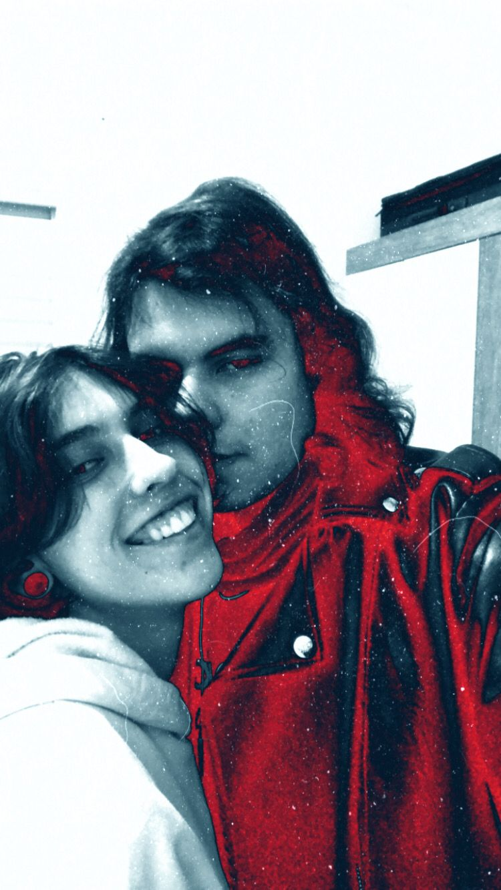
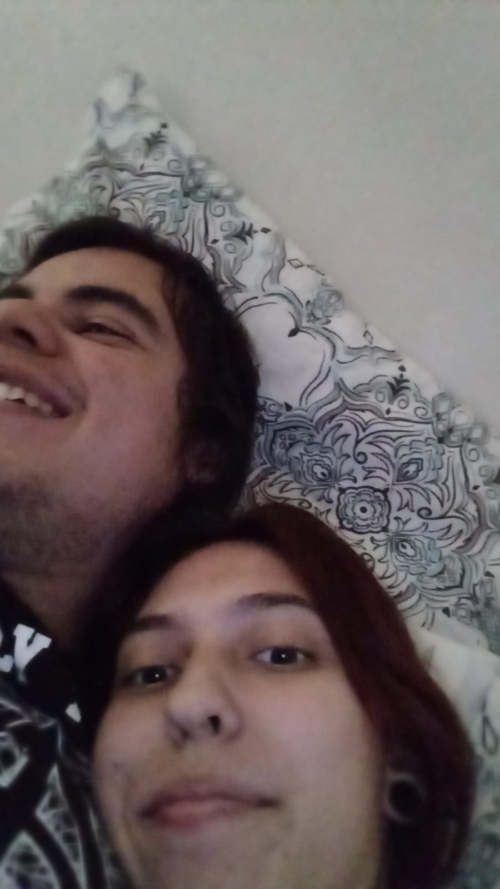
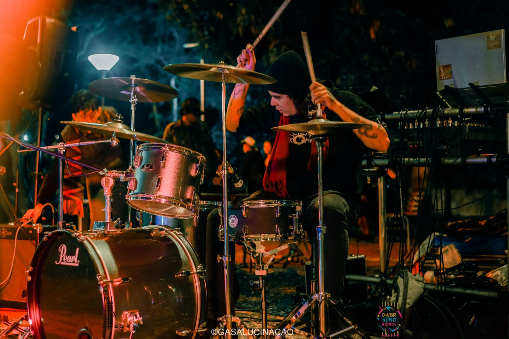
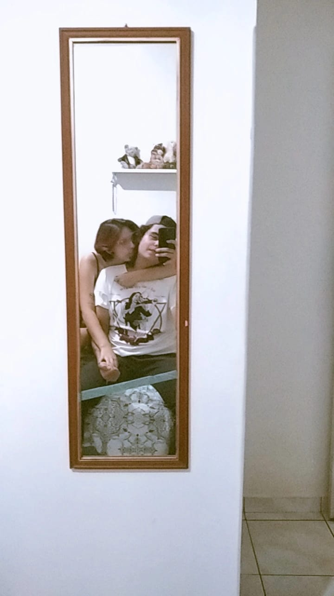
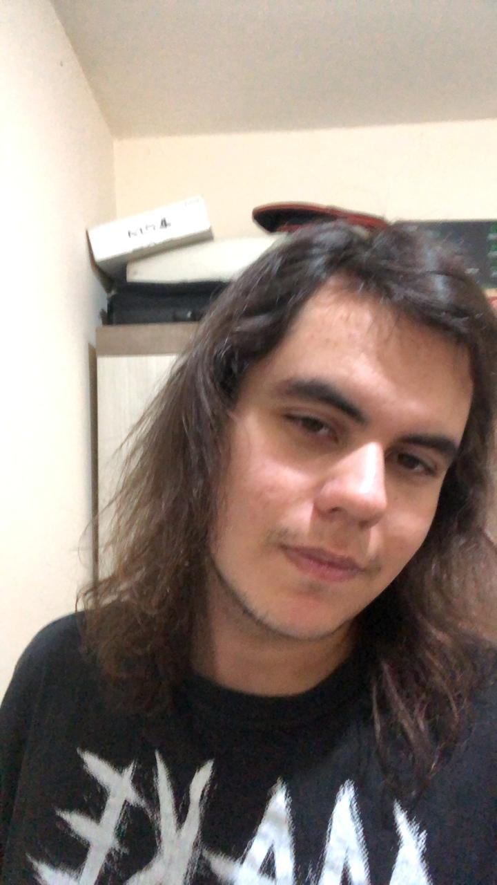
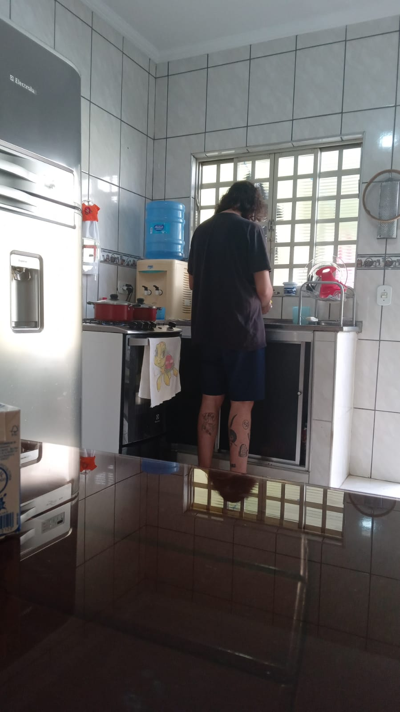
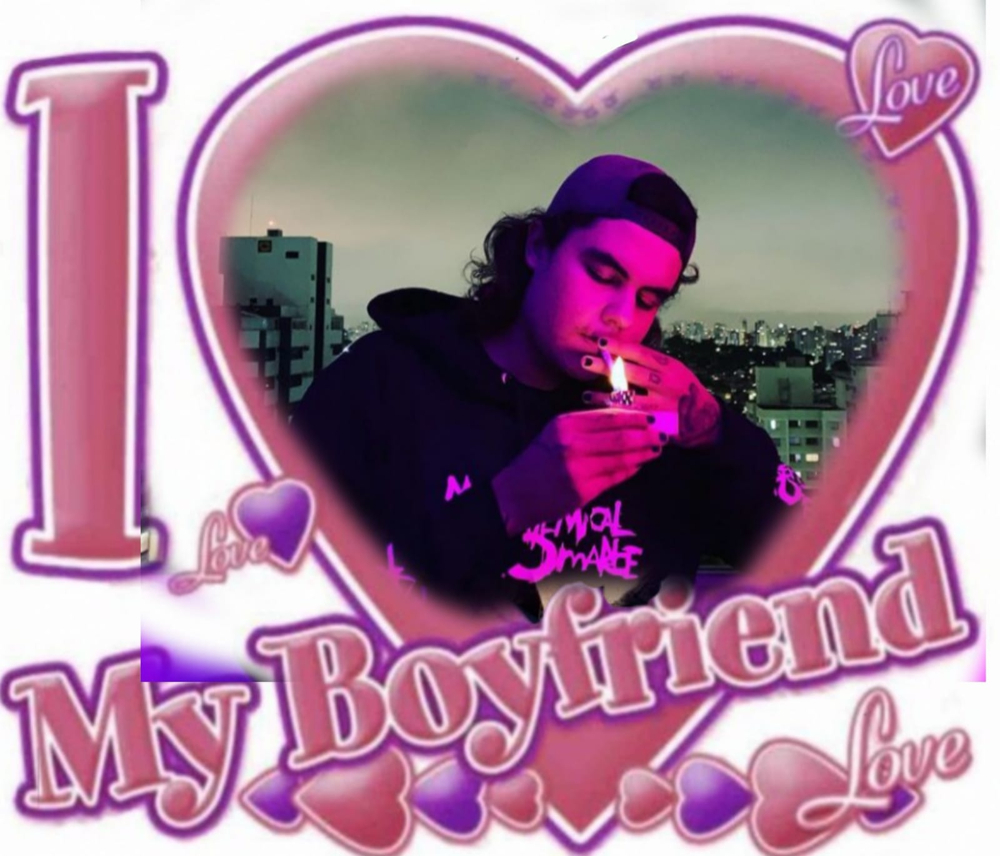
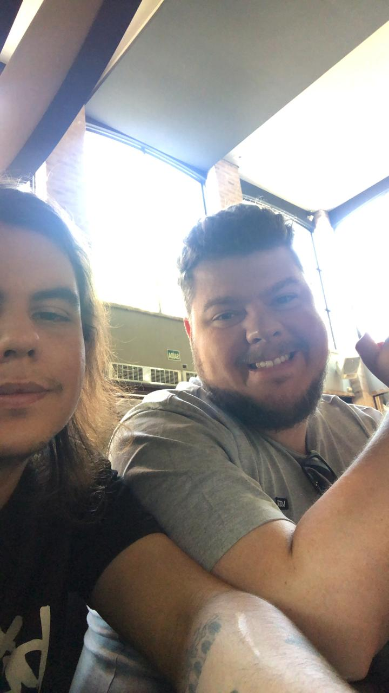
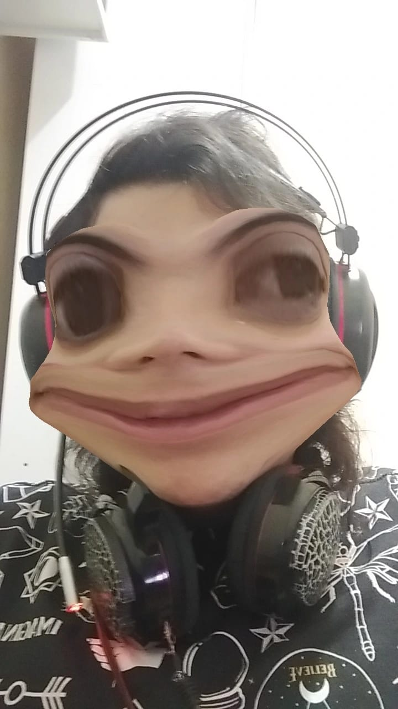

Cheiro
Preciso nem falar né? Sinto seu cheiro quase todos os dias, como se impregnasse no meu corpo, nos meus lençóis, na minha vida. E eu amo isso, eu amo sentir o seu calor e o odor do seu corpo quando você me abraça, impressionante que mesmo depois de um dia cansado você continua tendo cheiro de amor.
Sorriso
Você sempre me fala o quão inseguro é com seus dentinhos tortos, enxerga imperfeições que eu nunca consegui ver. Amo te ver sorrindo, não consigo sentir nada além de felicidade ao ouvir sua risada alta, daquelas que só o Igor Guimarães te faz gargalhar e isso me deixa muito feliz e de coração quentinho, te vendo rir após um noite de trabalho cansativa ou um dia ruim.
Talentos
Outra coisa, você é um EXCELENTE baterista e você SABE disso. É claro que você não é nenhum Travis Barker ainda, mas você sabe como é admirado e o quanto você toca bem. Note que essa aba se chama "TalentoS", e me refiro a quão bom jogador você é, em TUDO. Fico de cara em como você é bom em tudo que faz, e videogame tá em top 2 coisas fodas. Até me ganhando no Multiversus (o que realmente me deixou bad bad).
Abraços
Primeiro, eu AMO os seus braços tatuados e como você me envolve neles sempre que nos encontramos, não lembro mais de UMA vez que não te abracei ao te ver, afinal, você é meu melhor amigo há mais de 1 ano e todo lugar com você é um lugar feliz. Logo eu, que nunca fui muito de abraçar e evito a maior parte de contato físico que posso, como você eu sinto que seria capaz de me fundir pra virarmos uma única pessoa.
Cabelos
Seus "longos" cabelos, mesmo que um pouquinho ressecados são uma característica que sempre me fez te olhar diferente, te acho tão lindo com esse cabelo no ombro e tenho certeza que acharia lindo se ele não chegasse nas pontas das orelhas também, porque você é lindo de qualquer jeito e eu amo te admirar e ficar te observando fazendo qualquer coisa básica do dia. Adoro quando me pede pra secar seus cabelos e como você fica GOSTOSO com eles molhados pra trás..................
Corpo

Você sempre me disse também como é inseguro com seu corpo e eu nunca vou me cansar de falar o quanto eu te acho lindo, o quanto seu corpo me enlouquece em todos o sentidos. E essa característica é especial, porque só de te ver de longe eu preciso me agarrar em ti, você me dá um calor e um tesão que há muito tempo eu não sentia dessa forma e eu amo o fogo que a gente tem desde o primeiro dia que nossos lábios se encontraram na minha cama, na frente dos nossos amigos.
Responsabilidade
Algo que eu acho muito importante num relacionamento, é a responsabilidade e isso é algo que você sempre me mostrou ter propriedade. Desde o seu término, a responsabilidade afetiva me invejava, a forma como você lida bem com as coisas, mesmo depois de um surto, mesmo ficando chateado. Eu te admiro profundamente pela pessoa que você é e por tudo que você realizou até aqui e amo o fato de poder confiar em tudo que planejamos ter e que tudo vai se realizar da melhor forma.
Gostos musicais
Isso eu realmente acho importante entre um casal, e com a gente isso é perfeito, pois gostamos da maioria das coisas igualmente. Óbvio que somos pessoas individuais, temos coisas favoritas diferentes, amores por bandas diferentes, mas é ótimo poder planejar ir em algum lugar em que nós dois vamos curtir a música e não ficar um com cara de tédio pro outro. Tô extremamente ansiosa pra ver minha primeira banda internacional ao vivo com você!!!!!
Família
Bom, você sabe que eu não tenho bom histórico com familiares de ex-namorados(as) e isso sempre me assustou um pouco, porque é difícil ser eu mesma num ambiente hostil em que as pessoas não vão com a minha cara. Mas, desde sempre sua família sempre fez eu me sentir acolhida e confortável em ser eu mesma, falar as coisas que eu penso e agir da forma que eu gosto. Adoro passar tempo com você e sua família em todos os lugares, sinto como se tivesse sido escolhida pra você.
Piadas
Ok, esse assunto é delicado, mas eu AMO as suas piadas, até as mais sem graças quando você diz "Não é Karma não, doida, é guarda-roupa" naquele dia que você bateu a cabeça sem querer. Gosto muito dos vídeos engraçados que você manda, da sua gargalhada vendo algo bobo e até as piadas machistas e misóginas tiram um pouco de riso meu. Desde sempre você é assim e eu sou muito grata de poder te conhecer e sua personalidade verdadeira.